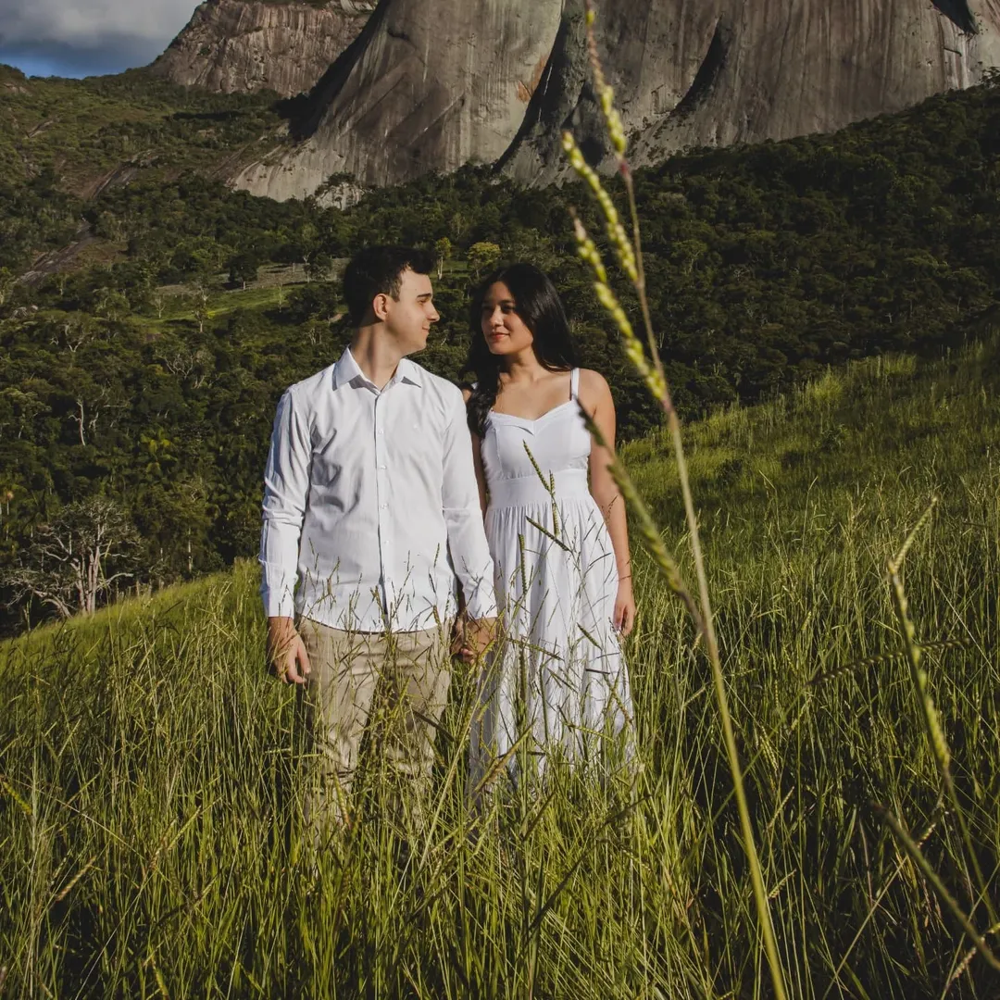
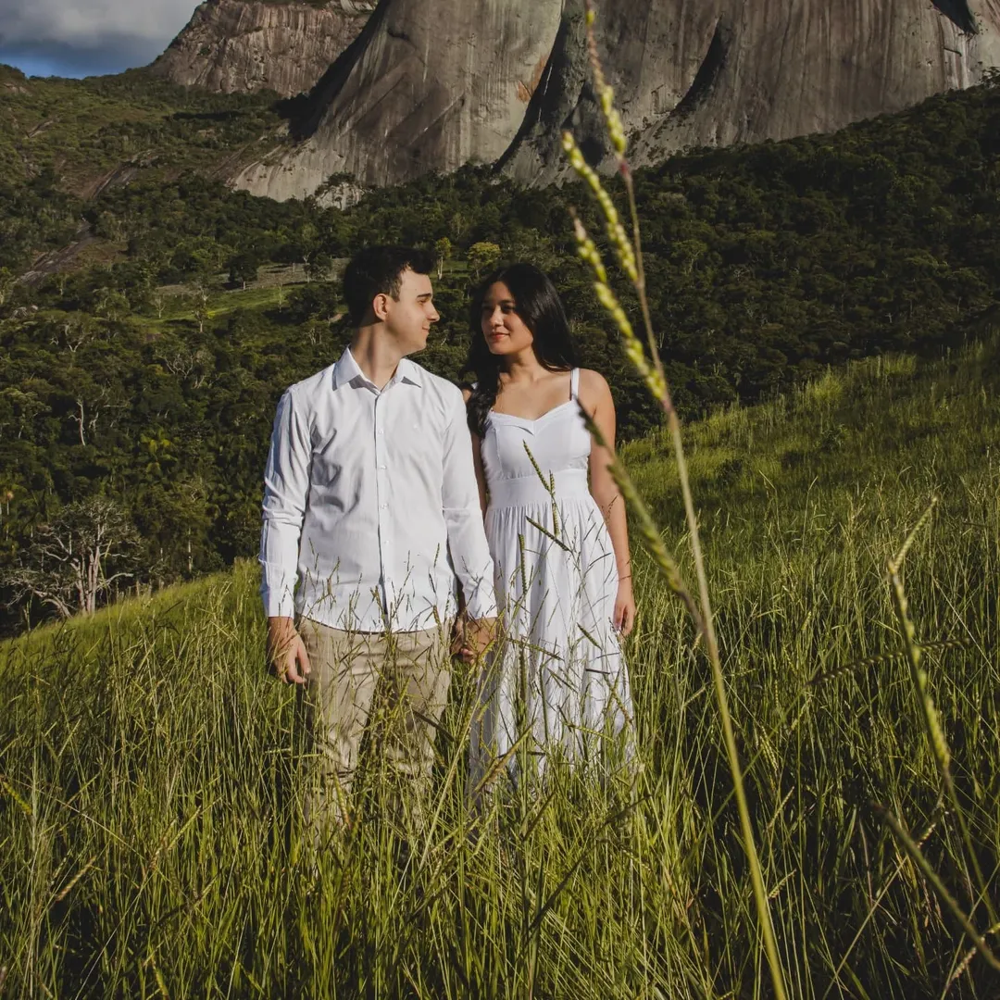
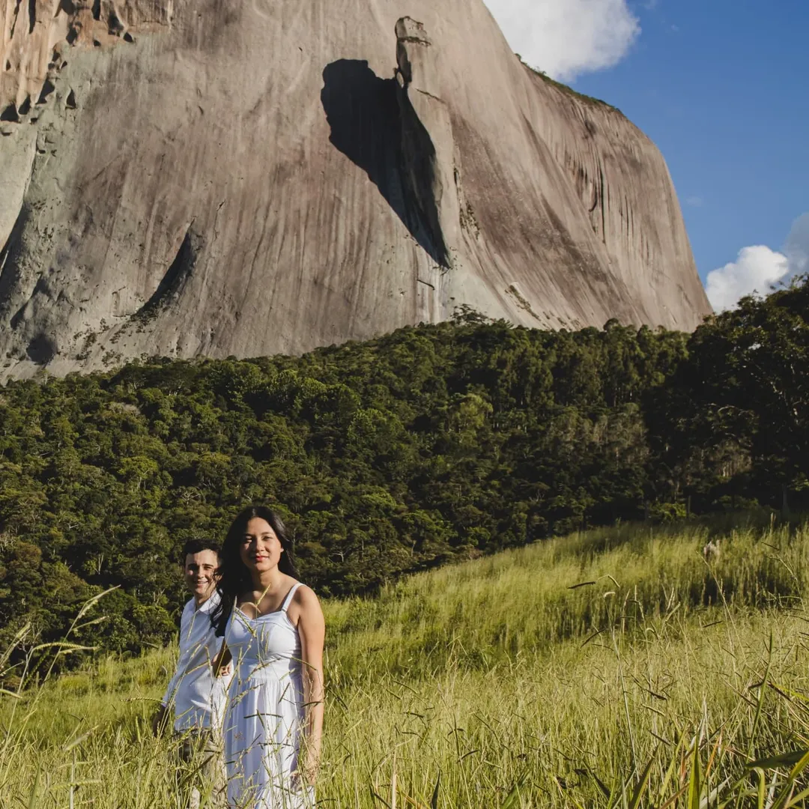
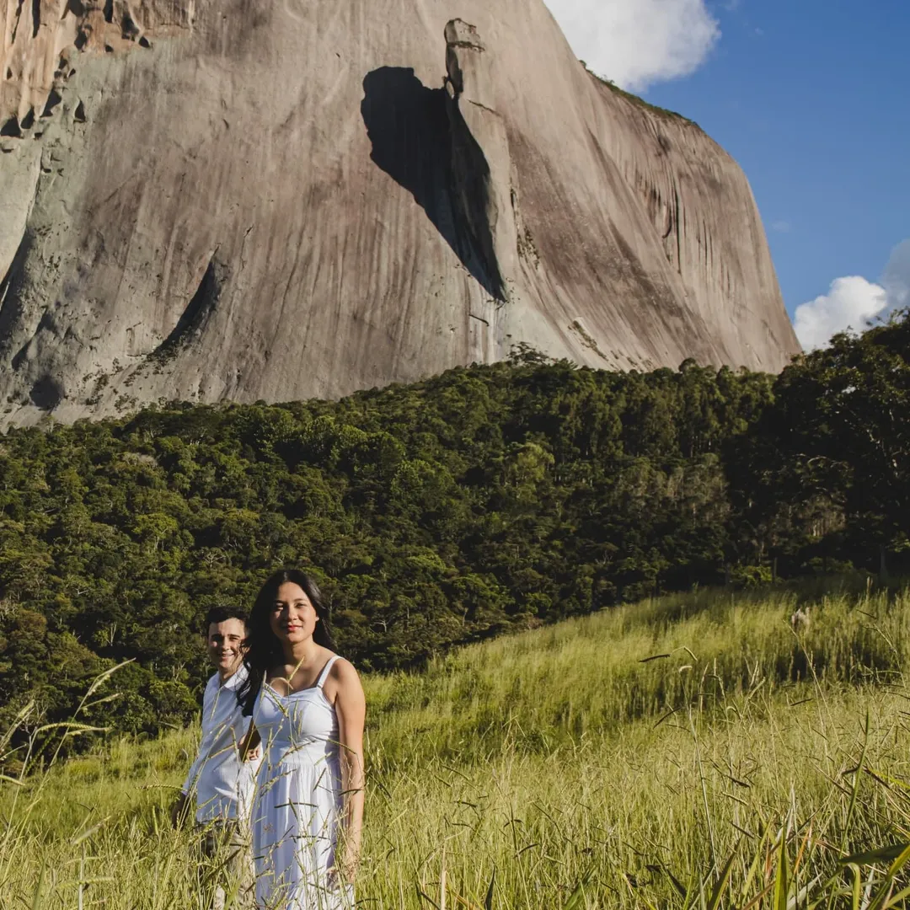
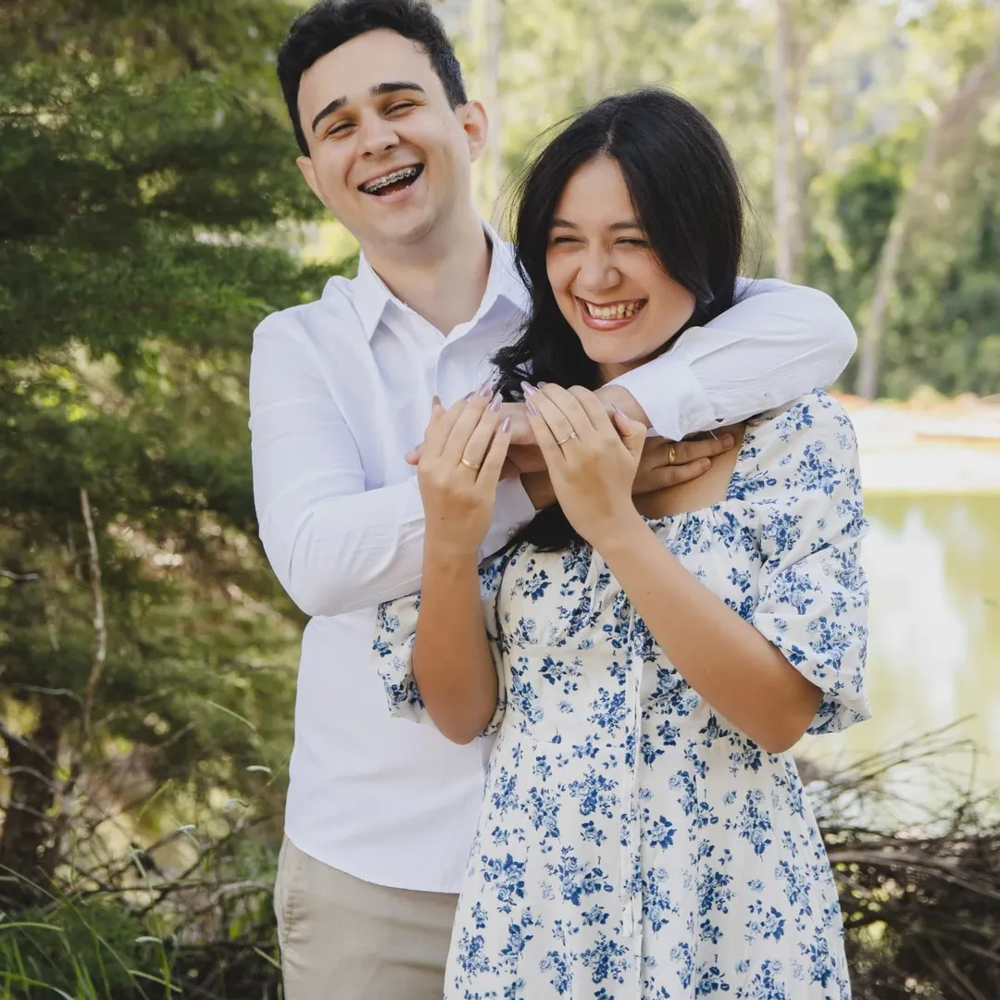
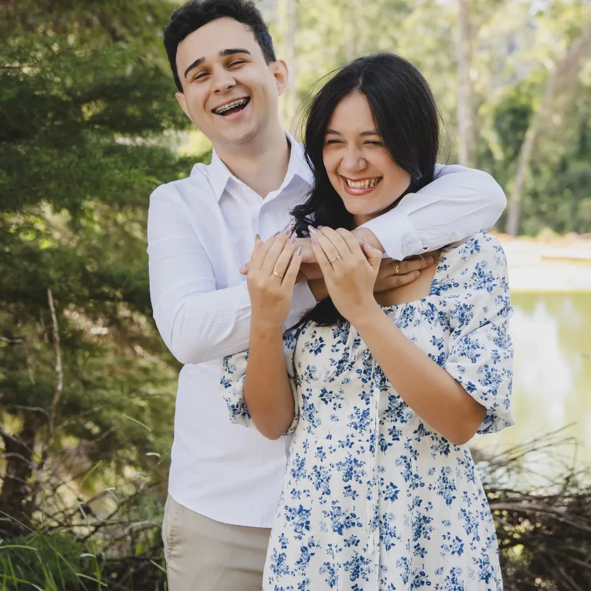

Nossa Carta Para Vocês
Queridos amigos,
Finalmente o grande dia chegou, o dia da união de vocês. Primeiro agradecer por terem nos escolhidos como padrinho e madrinha,
que Deus seja sempre a base desse casamento, que não falte amor e alegria nos bons momentos e também não falte fé e união nos ruins.
Matheus - "Que alegria enorme poder ver este dia chegar! Igor, parece que foi ontem que a gente corria pelos corredores da igreja,
sonhando alto sem imaginar como a vida nos levaria até aqui. Crescemos juntos, aprendemos a servir e a adorar com a música,
e agora vejo você iniciando uma nova e linda harmonia ao lado da Pamela e que dueto maravilhoso Deus preparou!
Pamela, que presente você é na vida do Igor. Dá pra ver no olhar dele o quanto vocês se completam e como juntos refletem o amor de Deus.
Oro para que esta união seja sempre fortalecida, cheia de paz, alegria e da presença do Senhor em cada passo que vocês derem."
Hillary - "Pamela e igor, é uma alegria imensa celebrar esse momento tão especial! Desejo, de coração, que o casamento de vocês seja repleto de amor,
companheirismo, respeito e muitas risadas. Mas agora, irei falar um pouquinho mais com você, minha prima, minha parceira de infância/adolescência (mesmo com a distância).
Crescemos lado a lado, pintando o cabelo de colorido, assistindo anime até tarde e surtando juntas com os yaois (poucos entenderam esses sentimentos KKKKKK).
Você merece um amor bonito, e fico feliz que encontrou isso.
Sejam felizes.
Com carinho, hiriliü´∂"
De coração, somos gratos por podermos testemunhar este momento tão especial. Que o lar de vocês seja cheio de bênçãos,
e que todos à volta possam ver o quanto Deus é fiel através da história que Ele está escrevendo com vocês.
Matheus e Hillary

 


 



 
